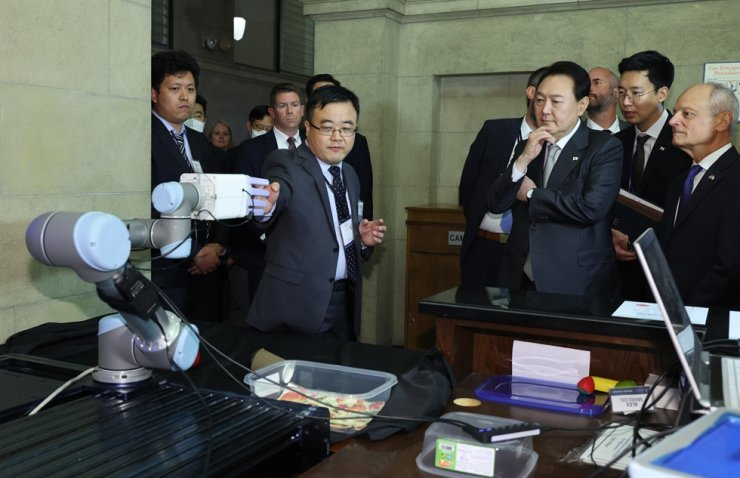

Gearbox
This is a design and 3D printing for a gearbox. The design utilizes a 3:1 gear reduction ratio, where the input and output shafts are offset by 90 degrees and are not collinear. The design features 2 spur gears to achieve the gear ratio, and two bevel gears at a ratio of 1:1 to achieve the 90 degrees offset.
Pick and Place Machine
This is a conceptual design of a Computerised Numerical Controlled (CNC) machine that is intended for assembling Surface Mounted Technologies (SMT), commonly known as a Pick and Place (PNP) Machine. The project involved using Solidworks Computer Aided Design Software to generate a Conceptual Design of the device and prepare engineering documentation and drawings justifying the design.
Design and Testing of Vision Algorithms for an Interactive Soft Robotic Hand
This is the summer research project that I was involved with in the summer of 2022 at the Microfluidics and BioMEMS Lab (MBL) at the University of Toronto in collaboration with Zhanfeng Zhou and under the supervision of Dr Xinyu Liu. I was worked on Computer Vision and image segmentation and smoothing algorithms for Soft Robotic Arm.
I presented my findings at the annual University of Toronto Undergraduate Engineering Research Day Conference (UnERD). The abstract for the submission can be found here. This project was also later presented in an Artificial Intelligence (AI) conference with the President Yoon Suk-yeol of the Republic of Korea at the University of Toronto in September 2022. More details regarding the conference can be found here
Binary Bot 2.0
Meet BinaryBot (2.0). It is an autonomous robot created using Lego Mindstorms EV3 that I designed and programmed myself. It reads black and white lines as 1s and 0s respectively, and converts and writes it in Base 10 (Decimal). In the following video, it demonstrates two samples of BinaryBot in action.
The 2.0 at the end of its name is a nod to a previous version of the same robot I had made many years ago with a fellow partner using the Lego Mindstorms NXT set. Unfortunately, the footage of that robot has since been lost.